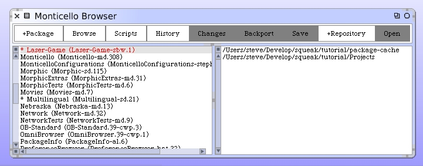
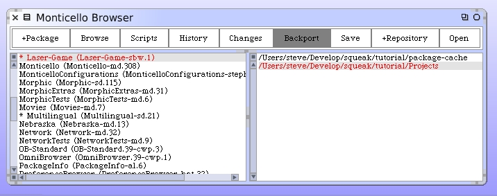
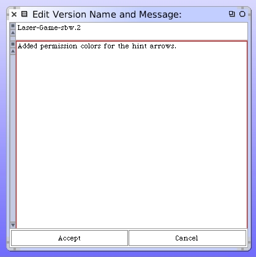
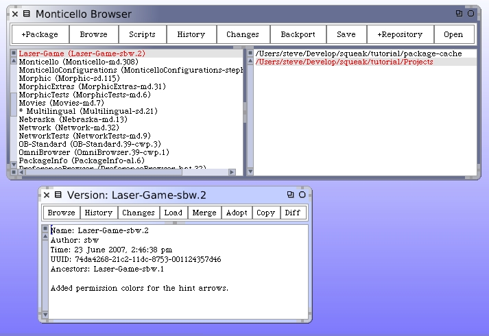

With this new feature completed why not go back to Monticello and version the code? Open up the Monticello browser.
Select our package from the list. You may have noticed that there's an "*" preceding the package name. That's Monticello's way of telling you there have been unsaved changes made to the package. Select our repository from the list.
Click "Save" and Monticello provides a version box where we can add a comment.
Click "Save" and we now have a version 2 for our package.
